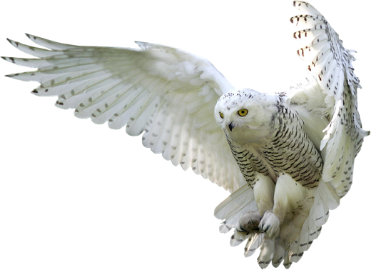
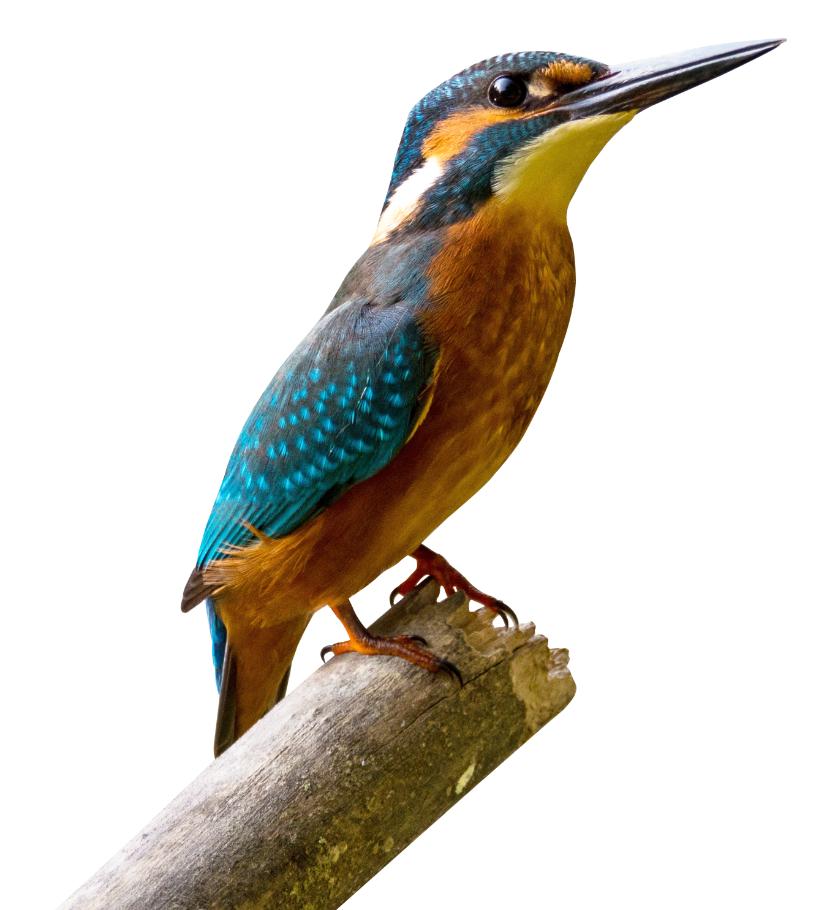
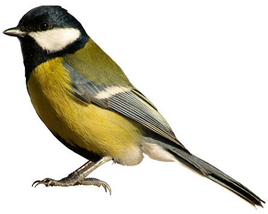
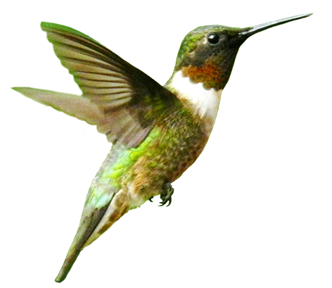

Lechuza es el nombre común de varias aves del orden de las
estrigiformes o rapaces nocturnas. Habitualmente designa especies que,
a diferencia de los búhos, no tienen plumas alzadas que parecen
orejas.


Martín pescador.
Ave de pequeño tamaño (aprox. 17cm) con un plumaje espectacular a base de tonos azules y verdosos o turquesas, con brillo metálico en la zona dorsal y anaranjado en la ventral. Cabeza grande con pico alargado y negro. Garganta y mejillas blancas. Patas y cola cortas, de color rojo.
Carbonero.
Pequeña ave (aprox. 14 cm) fácilmente reconocible por el tono amarillo de su cuerpo, el dorso de color verde oliva, alas azuladas, cabeza negra y mejillas blancas. Presenta una característica franja negra vertical (corbata) que nace en la base del pico y le recorre el pecho.


El colibrí tiene un tamaño oscilante de entre 9.5cm a 15cm. Son aves pequeñas con cola amplia, bifurcada o redondeada. Su pico es negro y delgado y tienen una larga lengua que utilizan para coger el néctar de las flores.